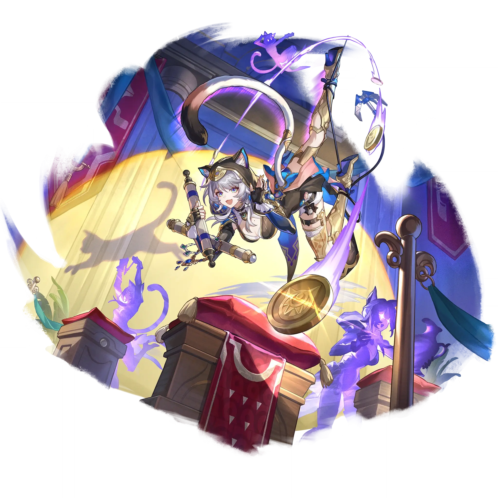

Cipher
Best Cipher build guide for Honkai Star Rail. See Cipher's best Relics, Light Cones, teams, Eidolons, Trace priority, and how to play Cipher.
🔍 Detail Skill
Semua skill aktif dan pasif beserta efeknya.
Deals Quantum DMG equal to #1[i]% of Cipher's ATK to one designated enemy.
Has a #6[i]% base chance to Weaken one designated enemy and adjacent targets (decreasing their DMG dealt by #3[i]%) and increasing Cipher's ATK by #5[i]%, lasting for #4[i] turn(s). Moreover, deals Quantum DMG equal to #1[i]% of Cipher's ATK to one designated enemy, and Quantum DMG equal to #2[i]% of Cipher's ATK to its adjacent targets.
When there are no enemy targets in "Patron" state on the battlefield, Cipher immediately causes one enemy target with the highest Max HP on the battlefield to become the "Patron." When using Skill and Ultimate, the primary target becomes the "Patron." The "Patron" state only takes effect on the latest target. After the "Patron" is attacked by other ally targets, Cipher immediately launches a Follo
Obtains "Zagreus's Blessing" for #1[i] second(s). During this time, Cipher will be undetectable by enemies and her movement speed increases by 50%. When approaching an enemy in the overworld/Simulated Universe/Divergent Universe, there is a chance of immediately obtaining a random Consumable. You can obtain Consumables up to #4[i] time(s) in each Earth day. When entering battle with "Zagreus's Ble
⚔ Light Cone Terbaik
Diurutkan dari yang paling kuat. Persentase menunjukkan performa relatif terhadap pilihan terbaik.
💎 Relic Set Terbaik
Set terbaik untuk karakter ini, diurutkan berdasarkan prioritas.
📊 Stat Utama
Stat yang dicari pada tiap slot.
👥 Tim yang Direkomendasikan
Karakter yang sering dipasangkan bersama Cipher.
 Feixiao
Feixiao
 Acheron
Acheron
 Aglaea
Aglaea
 Ashveil
Ashveil
 Cipher
Cipher
🔗 Lanjutkan
Build ini dirangkum dari Prydwen Institute. Starwise tidak menghitung sendiri. Angka bisa berubah setelah patch atau karakter baru rilis.